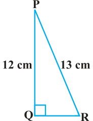

EXERCISE

- (i)sin A, cos A
- (ii)sin C, cos C
- 2.In Fig. 8.13, find tan \(P -\) cot R.
- 3.If sin \(A = \frac{3,}{4}\) calculate cos A and tan A.
- 4.Given 15 cot \(A = 8\), find sin A and sec A.
- 5.Given sec θ \(= \frac{13 ,}{12}\) calculate all other trigonometric ratios. Fig. 8.13
- 6.If \(\angle A\) and \(\angle B\) are acute angles such that cos \(A =\) cos B, then show that \(\angle A = \angle B\).
- 7.If cot θ \(= 7\) , evaluate : (i) \((1 +\) sin θ)(1 - sin θ) , (ii) \(cot^{2}\) θ
\(8 (1 +\) cos θ)(1 - cosθ)
- 8.If 3 cot \(A = 4\), check whether \(\frac{1-tanA}{1 +tan2A}\) \(^{2} = cos^{2} A - sin^{2}A\) or not.
- 9.In triangle ABC, right-angled at B, if tan \(A = \frac{1,}{3}\) find the value of:
- (i)sin A cos \(C +\) cos A sin C
- (ii)cos A cos \(C -\) sin A sin C
- 10.In \(\triangle PQR\), right-angled at Q, \(PR + QR = 25\) cm and \(PQ = 5\) cm. Determine the values of
sin P, cos P and tan P.
- 11.State whether the following are true or false. Justify your answer.
- (i)The value of tan A is always less than 1.
- (ii)sec \(A = \frac{12}{5}\) for some value of angle A.
- (iii)cos A is the abbreviation used for the cosecant of angle A.
- (iv)cot A is the product of cot and A.